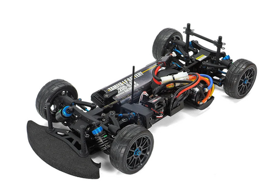
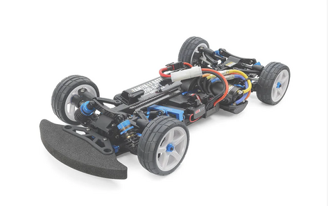

タミヤ TA08 PRO シャーシキット

画像引用元：タミヤ公式サイト
基本情報
| 機種名 | タミヤ TA08 PRO シャーシキット |
|---|---|
| 品番 | 58693 |
| 発売日 | 2021年3月 |
| 価格 | 34,100円（税込）/ 本体価格31,000円 |
| 対象レベル | 中級者〜上級者 |
| スケール | 1/10 |
| 生産状況 | 現行販売中 |
シャーシスペック
| シャーシタイプ | 2ベルトドライブ4WD ツーリングカー |
|---|---|
| シャーシ長 | 373mm（ボディ等含まず） |
| 全幅 | 187mm |
| ホイールベース | 257mm |
| フレーム | SV形状（ステップドV型）カーボンファイバー配合樹脂製ロワデッキ |
駆動系
| 駆動方式 | 横置きモーター・2ベルトドライブ4WD |
|---|---|
| モーター位置 | TRF420とほぼ同じ位置 |
| スパーギヤ位置 | モーター前方（安定した操縦性を実現） |
| デフギヤ | 前後ともオイル封入式ギヤデフ |
| ドライブシャフト | 前：スチール製ユニバーサル / 後：アルミ製ユニバーサル |
| ベアリング | フルベアリング仕様 |
サスペンション
| タイプ | 4輪ダブルウィッシュボーン独立 |
|---|---|
| アッパーアーム | A型アッパーアーム（位置決め精度が高く、タイヤに荷重がかかりやすい） |
| ダンパー | TRF-SSBBタイプ（スーパーショートビッグボア） |
| 調整機能 | キャンバー・キャスター角調整可能 |
| ステアリング | 3分割タイロッド式（左右のタイロッドを直線的に配置） |
主な特徴
- SV（ステップドV型）シャーシ：バッテリーとRCメカを斜めに搭載し、剛性と重量配分を最適化。ロール時の路面干渉も抑制
- アッパーデッキレス設計：V字形状カーボン繊維入り樹脂シャーシにより、アッパーデッキなしでも高剛性を実現
- 最適な重量配分：車体中央に重量物を集中配置し、低重心・低全高を実現
- TAシリーズの系譜：5年ぶりに登場したTA08は、TAシリーズのノウハウを結集
- タミチャレ最適化：タミヤチャレンジカップレギュレーションの速度域、セッティングでのベストバランスをコンセプトに設計
TA08R シャーシキット（レース仕様）

画像引用元：タミヤ公式サイト
TA08Rの特徴
| 品番 | 47498 |
|---|---|
| 発売日 | 2024年1月13日（土）発売 |
| 価格 | 65,780円（税込）/ 本体価格59,800円 |
| コンセプト | タミグラ・タミチャレの勝利を目指す厳選パーツ満載 |
TA08 PROからの主な進化点
- 2mm厚カーボンアッパーデッキ：シャーシ全体の剛性を大幅に向上
- リブ強化ロワデッキ：リヤにリブを立てた樹脂製ロワデッキで剛性向上
- アルミ製アッパーアームマウント：タイヤからの入力にダイレクトに反応する強度
- たわみを抑えたリヤボディマウント：後輪のトラクションを安定化
- 高効率駆動系：以下のパーツを追加装備
- フロント・ダブルカルダンドライブシャフト
- フロントダイレクトプーリー（アルミダイレクトカップ）
- 71Tスパーギヤ（TRF420センタープーリー）
- リヤギヤデフ（アルミデフジョイント、VG Oリング）
- アルミモーターマウント
- 足回り強化：アルミ製バルクヘッド、アルミ製C型ハブ、アルミ製ステアリングブロック
注記：TA08Rは2024年1月に発売されたレース専用仕様です。タミヤグランプリやタミヤチャレンジカップで好成績を目指す方に最適な仕様となっています。
ぽすとそに工房での修理実績
修理難易度
★★★★☆ （中級〜上級）
メンテナンスのポイント
- ベルトの張り調整：2ベルトドライブ方式のため、ベルトの張り具合が性能に直結します。定期的なチェックと調整が必要
- SVシャーシの特性：V字形状のシャーシは剛性が高い反面、バッテリーとメカの配置に慣れが必要です
- ギヤデフのメンテナンス：前後のオイル封入式ギヤデフは定期的なオイル交換が必須
よくある故障と対処法
- ベルトの伸び・破断：消耗品なので定期的な交換が必要。異音が出たら即交換
- プーリーの摩耗：ベルトとの相性問題で摩耗が早い場合あり。アルミ製に交換を推奨
- ダンパーオイル漏れ：SSBBダンパーは高性能だが、Oリング劣化に注意
初心者へのアドバイス
TA08 PROは上級者向けのシャーシです。2ベルトドライブの特性を理解し、細かなセッティングを楽しめる方におすすめします。TT-02やTB-05で経験を積んでからのステップアップを推奨します。
18年の経験から
TA08シリーズは、TAシリーズの中でも特に洗練されたシャーシです。2ベルトドライブの滑らかな加速とアッパーデッキレスの低重心設計が特徴。ただし、セッティングの幅が広い分、初心者には扱いが難しい面も。レースで勝つためには、シャーシ特性を深く理解することが重要です。